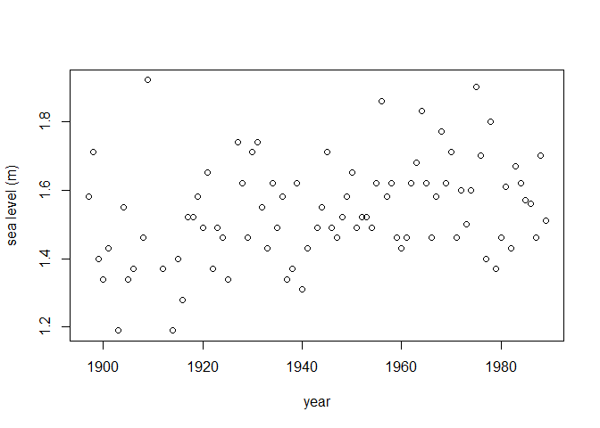
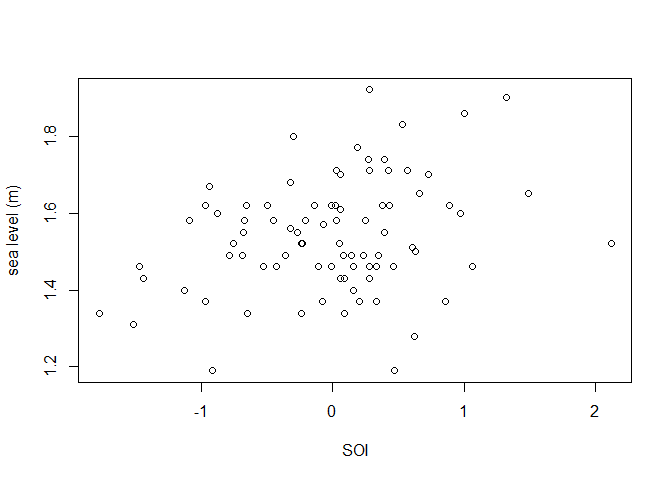
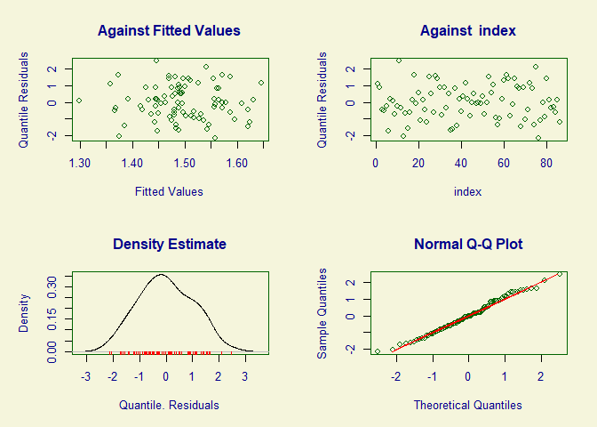
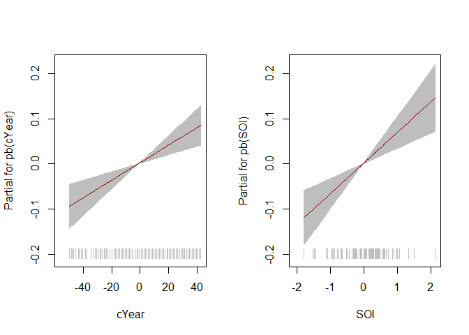
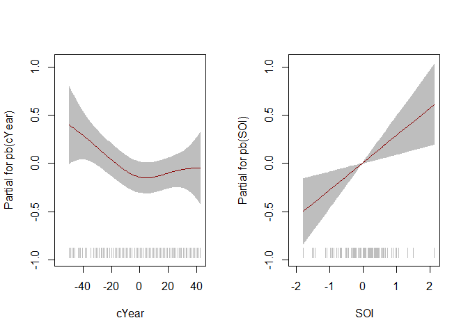

Generalized Additive Extreme Value Models for Location, Scale and Shape
The main aim of the gamlssx package is to enable a generalized extreme value (GEV) to be used as the response distribution in a generalized additive model for location scale and shape (GAMLSS), as implemented in the gamlss R package. The gamlss.dist R package does offer reversed GEV distribution via in RGE family, but (a) this is not the usual parameterization of a GEV distribution (for block maxima), and (b) in RGE, the shape parameter is restricted to have a particular sign, which is undesirable because the sign of the shape parameter influences strongly extremal behaviour. The gamlssx package uses the usual parameterization, with a shape parameter ξ, and imposes only the restriction that, for each observation in the data, ξ > − 1/2, which is necessary for the usual asymptotic likelihood theory to be applicable.
See Rigby and Stasinopoulos (2005) and the gamlss home page for details of the GAMLSS methodology. See also Gavin Simpson’s blog post Modelling extremes using generalized additive models for an overview of the use of GAMs for modelling extreme values, which uses the mgcv R package to fit similar models. The VGAM and evgam R packages can also be used
An example
We consider the fremantle data include in the gamlssx package, which is a copy of data of the same name from the ismev R package. These data contain 86 annual maximum seas levels recorded at Fremantle, Australia during 1987-1989. In addition to the year of each sea level, we have available the value of the Southern Oscillation Index (SOI). We use the fitGEV() function provided in gamlssx to fit a model to these data that is similar to the first one fitted, to the same data, in Gavin Simpson’s blog post.
The fitGEV() function calls the function gamlss::gamlss(), which offers 3 fitting algorithms: RS (Rigby and Stasinopoulos), CG (Cole and Green) and mixed (RS initially followed by CG). In the code below, we use the default RS algorithm. fitGEV() offers 2 scoring methods to calculate the weights used in the algorithm. Here, we use the default, Fisher’s scoring, based on the expected Fisher information. The code below does not do justice to the functionality of the gamlss package. See the GAMLSS books for more information.
# Load gamlss, for the function pb()
library(gamlss)
# Load gamlssx
library(gamlssx)
# Transform Year so that it is centred on 0
fremantle <- transform(fremantle, cYear = Year - median(Year))
# Plot sea level against year and against SOI
plot(fremantle$Year, fremantle$SeaLevel, xlab = "year", ylab = "sea level (m)")
plot(fremantle$SOI, fremantle$SeaLevel, xlab = "SOI", ylab = "sea level (m)")
# Fit a model with P-spline effects of cYear and SOI on location and scale
# The default links are identity for location and log for scale
mod <- fitGEV(SeaLevel ~ pb(cYear) + pb(SOI),
sigma.formula = ~ pb(cYear) + pb(SOI),
data = fremantle)
#> stepLength = 1
#> GAMLSS-RS iteration 1: Global Deviance = -112.2422
#> GAMLSS-RS iteration 2: Global Deviance = -117.4965
#> GAMLSS-RS iteration 3: Global Deviance = -118.3007
#> GAMLSS-RS iteration 4: Global Deviance = -118.6081
#> GAMLSS-RS iteration 5: Global Deviance = -118.7582
#> GAMLSS-RS iteration 6: Global Deviance = -118.8344
#> GAMLSS-RS iteration 7: Global Deviance = -118.8731
#> GAMLSS-RS iteration 8: Global Deviance = -118.8987
#> GAMLSS-RS iteration 9: Global Deviance = -118.9102
#> GAMLSS-RS iteration 10: Global Deviance = -118.9188
#> GAMLSS-RS iteration 11: Global Deviance = -118.9258
#> GAMLSS-RS iteration 12: Global Deviance = -118.9269
#> GAMLSS-RS iteration 13: Global Deviance = -118.9351
#> GAMLSS-RS iteration 14: Global Deviance = -118.9359
# Summary of model fit
summary(mod)
#> ******************************************************************
#> Family: c("GEV", "Generalized Extreme Value")
#>
#> Call: gamlss::gamlss(formula = SeaLevel ~ pb(cYear) + pb(SOI),
#> sigma.formula = ~pb(cYear) + pb(SOI), family = GEVfisher(mu.link = "identity",
#> sigma.link = "log", nu.link = "identity"),
#> data = fremantle, mu.step = 1, sigma.step = 1, nu.step = 1)
#>
#> Fitting method: RS()
#>
#> ------------------------------------------------------------------
#> Mu link function: identity
#> Mu Coefficients:
#> Estimate Std. Error t value Pr(>|t|)
#> (Intercept) 1.5007933 0.0149733 100.231 < 2e-16 ***
#> pb(cYear) 0.0019490 0.0004982 3.912 0.000195 ***
#> pb(SOI) 0.0680347 0.0174751 3.893 0.000208 ***
#> ---
#> Signif. codes: 0 '***' 0.001 '**' 0.01 '*' 0.05 '.' 0.1 ' ' 1
#>
#> ------------------------------------------------------------------
#> Sigma link function: log
#> Sigma Coefficients:
#> Estimate Std. Error t value Pr(>|t|)
#> (Intercept) -2.128696 0.088447 -24.068 <2e-16 ***
#> pb(cYear) -0.004574 0.002614 -1.750 0.0841 .
#> pb(SOI) 0.275258 0.112736 2.442 0.0169 *
#> ---
#> Signif. codes: 0 '***' 0.001 '**' 0.01 '*' 0.05 '.' 0.1 ' ' 1
#>
#> ------------------------------------------------------------------
#> Nu link function: identity
#> Nu Coefficients:
#> Estimate Std. Error t value Pr(>|t|)
#> (Intercept) -0.25619 0.08582 -2.985 0.00379 **
#> ---
#> Signif. codes: 0 '***' 0.001 '**' 0.01 '*' 0.05 '.' 0.1 ' ' 1
#>
#> ------------------------------------------------------------------
#> NOTE: Additive smoothing terms exist in the formulas:
#> i) Std. Error for smoothers are for the linear effect only.
#> ii) Std. Error for the linear terms maybe are not accurate.
#> ------------------------------------------------------------------
#> No. of observations in the fit: 86
#> Degrees of Freedom for the fit: 8.375675
#> Residual Deg. of Freedom: 77.62432
#> at cycle: 14
#>
#> Global Deviance: -118.9359
#> AIC: -102.1846
#> SBC: -81.62773
#> ******************************************************************
# Model diagnostic plots
plot(mod)
#> ******************************************************************
#> Summary of the Quantile Residuals
#> mean = -0.006109438
#> variance = 1.036755
#> coef. of skewness = 0.09394729
#> coef. of kurtosis = 2.322565
#> Filliben correlation coefficient = 0.9951795
#> ******************************************************************
# Plot of the fitted component smooth functions
# Note: gamlss::term.plot() does not include uncertainty about the intercept
# Location mu
term.plot(mod, rug = TRUE, pages = 1)
# Scale sigma
term.plot(mod, what = "sigma", rug = TRUE, pages = 1)